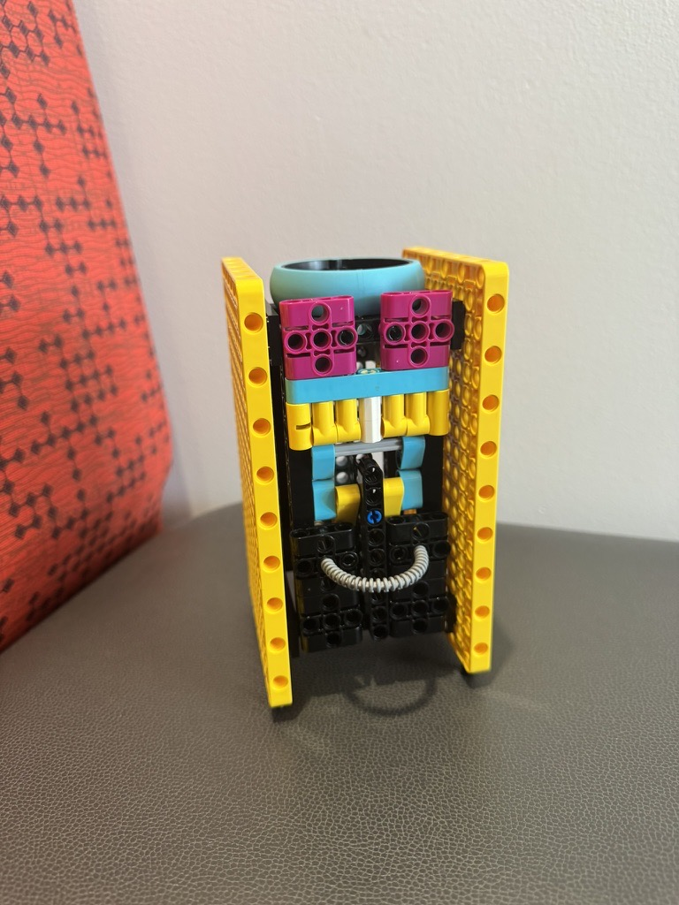
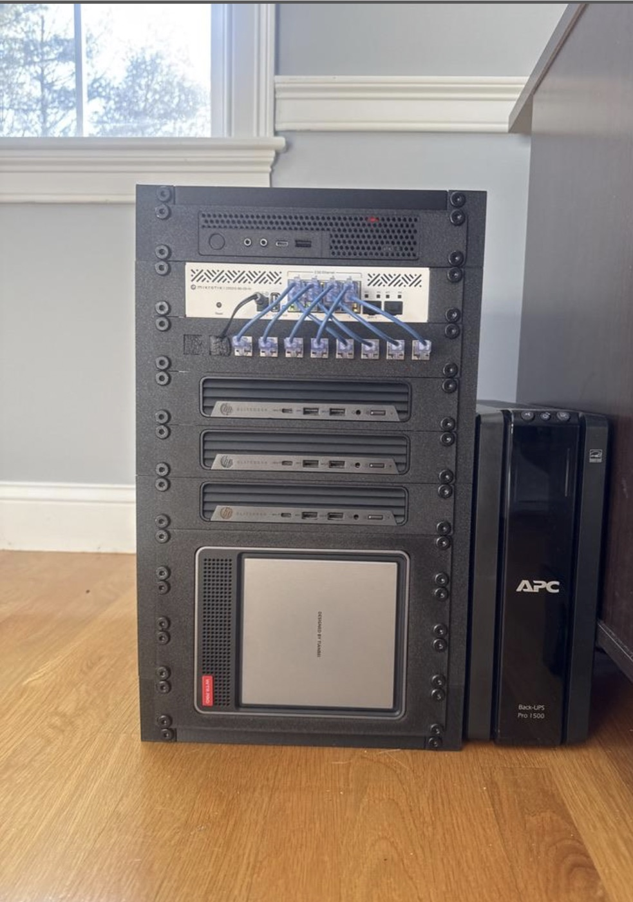

The brief for this project was to build something out of LEGO that says something about who I am. I built a LEGO server rack.
What it's based on. The build is a model of a real miniature server rack that I 3D printed and assembled, and have been working on since last summer. From top to bottom the real rack holds a router, a network switch, two compute nodes, a backup node, and a storage server.
Why this. I've spent a lot of time over the past two to three years messing around with enterprise server hardware. The hobby is commonly known as homelabbing, and it's been a good way for me to explore the things I'm actually interested in — 3D printing, computing, and cybersecurity — all in one project. Modeling the rack in LEGO was a way to introduce that to the class in a single object.
